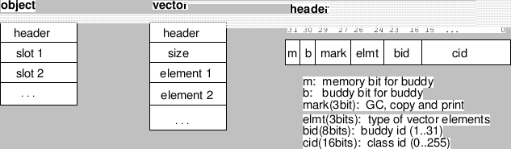

Subsections
and,orおよびcondは、Common Lispにおいてマクロとして知られているが、
EusLispではインタプリタ時の効率を改善するために特殊書式として実行される。
and {form}* [特殊]
-
-
formは、NILが現れるまで左から右に評価される。
もし、全ての書式がnon-NILとして評価されるならば、
最後の値が返される。
or {form}* [特殊]
-
-
formは、non-NIL値が現れるまで左から右に評価される。
そして、その値が返される。
もし、全ての書式がNILとして評価されるならば、NILを返す。
if test then [else] [特殊]
-
-
ifは、１つのthenとelse書式のみを持つことができる。
そこに多重書式を書きたいときは、prognを使って
グループ化しなければならない。
when test forms [マクロ]
-
-
ifと違って、
whenとunlessは、多重書式で書くことを許可している。
testの評価がnon-NILのとき、whenは実行され、
評価がNILのとき、unlessは実行される。
もう一方で、これらのマクロはelse書式を追加することを
許可していない。
unless test forms [マクロ]
-
-
(when (not test) . forms)と同等である。
cond (test {form}*)* [特殊]
-
-
任意の数の条件項は、condの後に続けることができる。
それぞれの条件項において、最初の書式testが評価される。
もし、non-NILであったとき、その条件項の残りの書式は、続いて評価される。
そして、最後の値が返される。
もし、testのあとに書式がなかったならば、
testの値が返される。
testが失敗したとき、次の条件項はtestがnon-NIL評価されるかまたは
全ての条件項が尽きてしまうまで繰り返される。
条件項が尽きてしまった場合、condはNILを返す。
case key {({label  ({lab}*) {form}*)}* [マクロ]
-
-
keyとlabelが一致した条件項について、
formが評価され、最後の値が返される。
keyとlabelの間の等価は、eqまたは
memqで行われ、equalではない。
prog1 form1 &rest forms [関数]
-
-
form1とformsは、次々と評価され、
form1から返される値がprog1の値として返される。
progn {form}* [特殊]
-
-
formは次々に評価され、最後のformの値が返される。
prognは特殊書式である。なぜなら、ファイルの最初に現れたとき
特別な意味を持つからである。
そのような書式がコンパイルされたとき、内部書式はすべて最初に現れた
として見なす。
マクロがdefunやdefmethodの連続で拡張される場合、それが最初に
現われなければならないときに役立つ。
setf {access-form value}* [マクロ]
-
-
valueを一般化変数access-formに割り当てる。
let ({var (var [value])}*) {declare}* {form}* [特殊]
-
-
ローカル変数を生成する。
すべてのvalueは評価され、並行してvarに割り当てられる。すなわち、
(let ((a 1)) (let ((a (1+ a)) (b a)) (list a b))) の結果は
(2 1)である。
let* ({var (var [value])}*) {declare}* {form}* [特殊]
-
-
ローカル変数を生成する。
全てのvalueは次々に評価され、varに割り当てられる。すなわち、
(let ((a 1)) (let* ((a (1+ a)) (b a)) (list a b)))の結果は
(2 2)である。
flet ({(fname lambda-list . body)}*) {form}* [特殊]
-
-
ローカル関数を定義する。
labels ({(fname lambda-list . body)}*) {form}* [特殊]
-
-
ローカルなスコープとなる関数を定義する。
fletとlabelsとの違いは、
fletで定義されたローカル関数は、その他の関数を参照または再帰できないが、
labelsは相互の参照を許可する。
block tag {form}* [特殊]
-
-
return-fromによって脱出可能なローカルブロックを作る。
tagは、ローカルにスコープされ、評価されない。
return-from tag value [特殊]
-
-
tagによって示されたブロックを脱出する。
return-fromは、関数やメソッドから脱出するときに使用される。
関数やメソッドは、その本体をすべて取り囲んだ部分をブロックとして
自動的に確定され、その関数またはメソッドの名前を付ける。
return value [マクロ]
-
-
(return x)は、(return-from nil x)と同等である。
loop, while, do, dolist, dotimesは、暗黙的にNILと名前が付けられた
ブロックとして確定されるため、これらの特殊書式と組み合わせて使用する。
catch tag {form}* [特殊]
-
-
throwによって脱出または値を返すための動的なブロックを確定する。
tagは評価される。
全て見えるcatchのtagは、sys:list-all-catchersから得ることができる。
throw tag value [特殊]
-
-
catchブロックから脱出またはvalueを返す。
tagとvalueは評価される。
unwind-protect protected-form {cleanup-form}* [特殊]
-
-
protected-formの評価が終った後、
cleanup-formが評価される。
unwind-protectの外側にブロックまたはcatch
ブロックを作っても構わない。
return-fromやthrowでさえ、そのようなブロックから
抜け出すためにはprotected-formの中で実行される。
cleanup-formは、評価されることが保証されている。
また、もしprotected-formが実行されている間にエラーが起こったならば、
cleanup-formはいつもresetによって実行される。
while test {form}* [特殊]
-
-
testがnon-NILと評価されている間、
formは、繰返し評価される。
whileは、formのまわりにNILと名付けられるブロックを自動的に確定する
特殊書式である。
returnは、そのループから抜け出すために使用することができる。
次のイテレーションへ飛ぶときためには後に紹介するtagbodyとgoを次のように使う:
(setq cnt 0)
(while
(< cnt 10)
(tagbody while-top
(incf cnt)
(when (eq (mod cnt 3) 0)
(go while-top)) ;; jump to next iteraction
(print cnt)
)) ;; 1, 2, 4, 5, 7, 8, 10
tagbody {tag statement}* [特殊]
-
-
tagは、goのために名付けられる。
tagbodyの中のみgoを使用することができる。
go tag [特殊]
-
-
ローカルにスコープされたtagbodyのなかに現れるtagの直後の
書式に制御を移す。
ローカルスコープを横切って違うtagbodyのtagに制御を移すことは
禁止されている。
prog ({var (var [init])}*) {tag statement}* [マクロ]
-
-
progはマクロで、以下のように展開される。
(block nil (let var (tagbody tag statement)))
do ({(var init [next])}*) (endtest [result]){declare} {form}
* [マクロ]
-
- varはローカル変数である。
それぞれのvarに、initは並行に評価され、割り当てられる。
つぎに、endtestが評価され、もし真のときdoはresultを返す。
(そうでないときは、NILを返す)
もしendtestがNILを返したならば、それぞれのformは、
順番に評価される。
書式の評価後、nextが評価され、その値は
それぞれのvarに再割当され、次の繰返しが始まる。
do* ({var init [next]}*) (endtest [result]){declare} {form}* [マクロ]
-
- do*は、initとnextの評価と
varへの割り当てが連続的に起こることを除いて、doと同様である。
dotimes (var count [result]) {forms}* [マクロ]
-
-
formsの評価をcount回行う。
countは、一回のみ評価される。
それぞれの評価の中で、varは整数のゼロから
count-1まで増加する。
dolist (var list [result]) {forms}* [マクロ]
-
-
listのそれぞれの要素は、varに連続的に与えられる。
そしてformsは、それぞれの値で評価される。
dolistは、他の繰返しより早く実行される。たとえば、
mapcarや再帰的関数のようなものより。
それは、dolistが関数のclosureを作ったり適用したりする必要が
なく、新しいパラメータのバインドが必要でないため。
until condition {forms}* [マクロ]
-
-
conditionが満たされている間、formsを評価する。
loop {forms}* [マクロ]
-
-
formsを永遠に評価する。
実行を止めるためには、return-from, throwまたはgoが
formsのなかで評価されなければならない。
Common Lispのtypepとsubtypepはないので、
subclasspやderivedpで疑似実現すること。
eq obj1 obj2 [関数]
-
- obj1とobj2が同じオブジェクトを指すポインタあるいは同じ
数値のときTを返す。
例えば:(eq 'a 'a)はT、(eq 1 1)はT、(eq 1. 1.0)はNIL、
(eq "a" "a")はNILである。
eql obj1 obj2 [関数]
-
-
EusLispの中で数値は全て直接値で表現されるため、eqとeqlは
同一である。
equal obj1 obj2 [関数]
-
-
いろんな構造のオブジェクトの等価性をチェックする。オブジェクトは、文字列・ベクトル・
行列などで再帰的に参照してないことが保証されなければならない。
obj1やobj2が再帰的に参照されていたとすると、
equalは無限ループとなる。
superequal obj1 obj2 [関数]
-
-
superequalは、環状参照をチェックするので遅い。しかしロバストな等価が得られる。
null object [関数]
-
- objectがNILのとき、Tを返す。
(eq object nil)を評価する。
not object [関数]
-
-
notは、nullと同一である。
atom object [関数]
-
-
オブジェクトがconsのインスタンスである時のみ、NILを返す。
(atom nil) = (atom '()) = T)
注意:vectors, strings, read-table, hash-tableなどに対しては、それらがどんなに
複雑なオブジェクトとなっていてもatomはTを返す。
every pred &rest args [関数]
-
-
全てのargsがpredについてTを返した時のみ
Tを返す。everyは、predが全てのargsに対して効力があるかどうかを
検査する時に使用される。
some pred &rest args [関数]
-
-
argsのうちどれか1つがpredについてTを返したとき
Tを返す。someは、predがargsのどれかに対して効力があるかどうかを
検査する時に使用される。
functionp object [関数]
-
-
objectがapplyやfuncallで与えられる関数オブジェクトであるならTを返す。
注意:マクロはapplyやfuncallを適用することができない。
functionpは、objectが、type=0のコンパイルコードか、関数定義を持つsymbolか、
lambda-formかあるいはlambda-closureであったとき、Tを返す。
Examples: (functionp 'car) = T, (functionp 'do) = NIL
compiled-function-p object [関数]
-
-
objectが、コンパイルコードのインスタンスであったとき、Tを返す。
そのコンパイルコードが関数かまたはマクロかを知るためには、
そのオブジェクトに:typeメッセージを送り、その返り値が
functionとmacroのどちらになっているかを調べる。
Travis CI User
2017-03-07